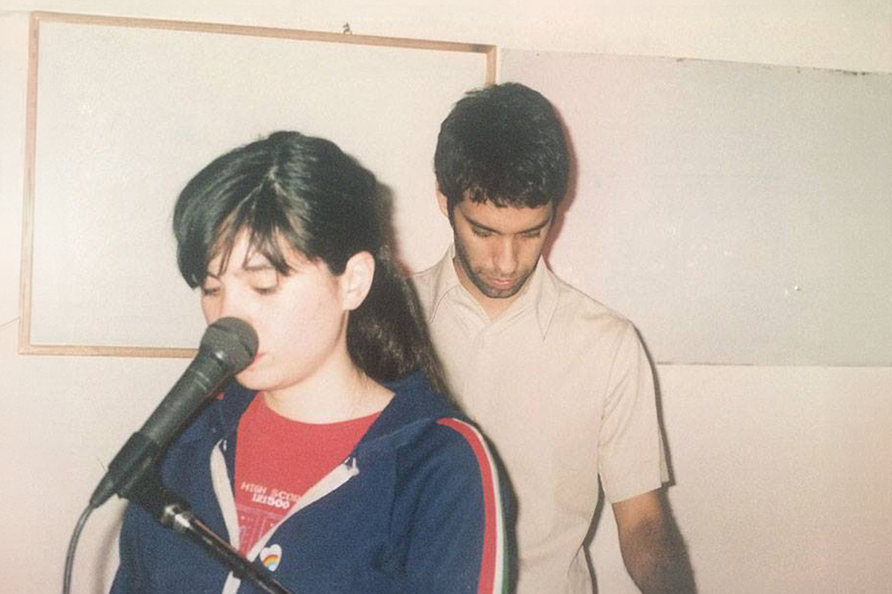

Javiera Mena, Esquemas juveniles y el nacimiento de una nueva era en la música chilena
A 20 años de lanzamiento, revisamos el disco que cambió el rumbo del pop nacional
A 20 años de lanzamiento, revisamos el disco que cambió el rumbo del pop nacional

Cuando hablamos de trabajos clásicos de la música chilena, siempre se nombran los discos de Violeta Parra, Víctor Jara, Los Jaivas o Quilapayún; si se trata de rock, nunca faltan Los Prisioneros, Los Tres, Lucybell o La Ley; tampoco suelen faltar los Ángeles Negros, Tiro de Gracia o, más adelante, entrando en la década de los 2000, Los Bunkers.
Sin embargo, a pesar de que claramente en Chile no nos quedamos cortos si de buena música se trata, se suele olvidar que el cambio de siglo también dejó álbumes que hoy pueden considerarse fundamentales para entender la música chilena contemporánea. Y ahí es donde se posiciona el primer álbum de estudio de Javiera Mena, “Esquemas juveniles”, el que este año se encuentra de aniversario por los 20 años desde su lanzamiento.
Acá le daremos una vuelta a la importancia de este álbum, su relevancia en el pop nacional y por qué muchos artistas toman este trabajo como una de sus mayores inspiraciones al momento de crear y encontrar su sonido.
En 2006 ocurrió un cambio significativo en la escena musical nacional. Quizás pasó desapercibido en su momento, pero ahora, 20 años más tarde, es bastante claro: la música comenzó a pensarse de distinta forma, dando paso a una globalidad en el sonido chileno, que por tantos años fue fuertemente ligado al rock y sus derivados.
El pop más independiente volvía a tener un nicho fuerte, dinámico, distintivo, auténtico y atrevido, completamente diferente a la escena del pop que ya conocíamos y que había nacido en suelo nacional. Y una de las pioneras en este nuevo movimiento, indiscutiblemente, fue Javiera Mena.
Mena, que en 2006 tenía solo 23 años, se encontraba haciendo pequeños shows en solitario mientras se preparaba para lanzar su disco debut “Esquemas juveniles”, sin prever que estaba a punto de cambiar la trayectoria de una escena musical que durante mucho tiempo permaneció estática.
¿Qué tenían en común Javiera y los otros músicos de esta década? Que habían nacido en los 80’s y crecido con un montón de bandas y artistas que, a su manera, también empezaban a deambular e incursionar por otros estilos ligados al rock, que por mucho tiempo fue la apuesta segura. Pero otra cosa, igual de importante: tenían acceso a internet, a plataformas como MySpace y a una red musical transnacional que se globalizaba y expandía con rapidez.
¿Resultado? Una generación que comenzó a desmarcarse de la tradición rockera dominante, recuperando el pop como un lenguaje artístico legítimo, en diálogo con el synthpop de los años ochenta (y su nostalgia), la electrónica, el indie pop y la canción de autor.

Teniendo claro el contexto, y que artistas como Gepe también estaban dejando su huella de forma similar a Mena durante esos años, es que podemos llegar a descifrar la distinción que hizo de “Esquemas juveniles” un trabajo clave en la música chilena. La fórmula fue más o menos sencilla: combinar la vulnerabilidad y honestidad que cruza la adolescencia, la melancolía y el deseo, con una producción refinada (gracias a la mano de Cristian Heyne), cargada de melodías acústicas, teclados simples, secuencias digitales y sintetizadores.
Fue justamente la novedad en este cruce entre intimidad y sonidos acústicos/electrónicos, los que terminaron marcando un antes y un después en la escena musical chilena. Y las letras…no olvidemos el impacto que generaron las letras.
Con esto, “Esquemas juveniles” se consolidó como un disco fundacional del pop chileno contemporáneo, sobre todo porque demostró que este estilo de música, siempre tan vilipendiado, podía dar espacio a la experimentación y la intimidad lírica. Y esa impronta se puede notar claramente en muchos de los artistas que vinieron después, quienes desarrollaron un estilo claramente inspirado en este impecable debut.
“Esquemas juveniles” cumplió 20 años, y el aniversario de este discazo se celebrará en grande.
La artista confirmó que va a dar un concierto como celebración, en un show que sería el más importante de toda su carrera, y donde repasará no solo los hits del álbum, sino que también todos los éxitos de su carrera.
El lugar será el Movistar Arena, y el día el próximo 9 de noviembre. Y, para los interesados, todavía quedan algunas pocas entradas disponibles por el sistema Puntoticket.
Honestamente, no se me ocurre una mejor manera de festejar uno de esos discos que definieron una década, que marcaron un antes y un después en la historia del pop chileno, que junto a los fans entre “la melancolía y la pista de baile”.
 Cultura
CulturaSé que suena raro hablar de calor extremo mientras en Chile todos están buscando la parka más gruesa del clóset.
 Cultura
CulturaEl hecho de que estemos entrando al mes de julio no se puede creer. Pero lo que tampoco se puede creer es la cantidad de artistas que han…
 Cultura
CulturaSi de britpop se trata, la discusión siempre se resume a la existencia de dos grupos: Oasis y Blur. Ambas bandas, que siempre mostraron una…